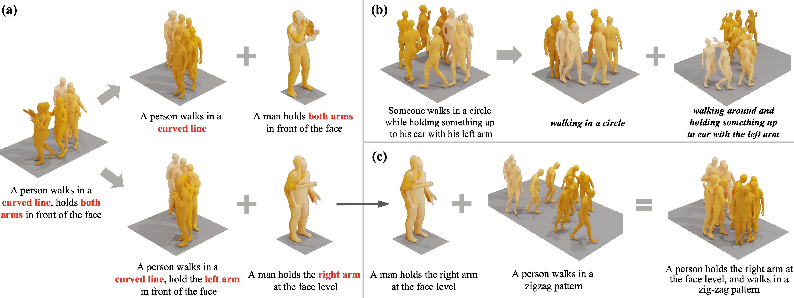
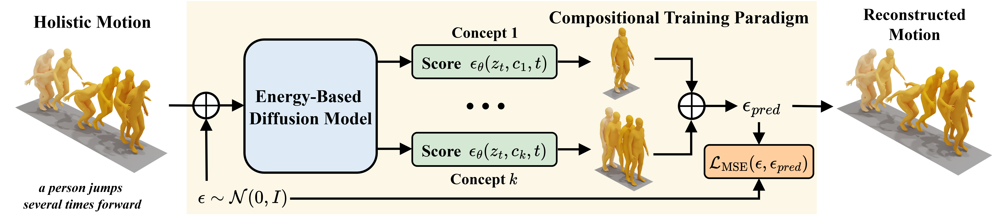

(a) Decomposition, (b) Self-Decomposition, (c) Composition
Human motions are compositional: complex behaviors can be described as combinations of simpler primitives. However, existing approaches primarily focus on forward modeling, e.g., learning holistic mappings from text to motion or composing a complex motion from a set of motion concepts. In this paper, we consider the inverse perspective: decomposing a holistic motion into semantically meaningful sub-components. We propose DeMoGen, a compositional training paradigm for decompositional learning that employs an energy-based diffusion model. This energy formulation directly captures the composed distribution of multiple motion concepts, enabling the model to discover them without relying on ground-truth motions for individual concepts. Within this paradigm, we introduce three training variants to encourage a decompositional understanding of motion: ① DeMoGen-Exp explicitly trains on decomposed text prompts; ② DeMoGen-OSS performs orthogonal self-supervised decomposition; ③ DeMoGen-SC enforces semantic consistency between original and decomposed text embeddings. These variants enable our approach to disentangle reusable motion primitives from complex motion sequences. We also demonstrate that the decomposed motion concepts can be flexibly recombined to generate diverse and novel motions, generalizing beyond the training distribution. Additionally, we construct a text-decomposed dataset to support compositional training, serving as an extended resource to facilitate text-to-motion generation and motion composition.

Latent-aware DeMoGen-Exp
a person dances on the spot while waving the right arm in the air
a person dances and poses with legs splayed and arms outstretched
a person dances on the spot while waving the right arm in the air, then poses with legs splayed and arms outstretched
Latent-aware DeMoGen-OSS
the person is walking in a curve to the left hand side
the person walks to the right in a curve
the person is walking in a curve to the left hand side and then back around to the right in a curve
Latent-aware DeMoGen-SC
a person appears to be holding some thing with both hands
a person throws something forward with the left hand
a person appears to be holding some thing with both hands and then throws it forward with their left hand
Semantic-aware DeMoGen-Exp
a man jumps from side to side
a man keeps his hands to his torso
a man jumps from side to side with his hands to his torso
Semantic-aware DeMoGen-OSS
a person squats down, then gets up
a person jumps up slightly, raises both hands above the head
a person squats down, then gets up, raises both hands above the head
Semantic-aware DeMoGen-SC
a person turns round 180 degrees
a person appears to drink something
a person turns round 180 degrees then appears to drink something
Example A — a person walks forward, bends down, picks something up, then walks backward
Input motion
Decomposed concept 1
a person walks forward
Decomposed concept 2
a person bends down, picks something up, then walks backward
a person walks forward, bends down, pick something up
a person walks backward
Example B — a person walks in a circle, lifts both hands overhead
Input motion
Decomposed concept 1
a person walks in a circle
Decomposed concept 2
a person lifts both hands overhead
a person walks in a circle and lifts the left hand overhead
a person lifts the right hand overhead
DeMoGen-OSS
Input motion
a person takes deliberate steps, some much larger steps and some much smaller steps, to cross stepping stones
Decomposed concept 1
a person takes some smaller steps on stepping stones
Decomposed concept 2
a person takes some larger steps to cross stepping stones
DeMoGen-SC
Input motion
a person is walking stumbled toward the left hand side along the way
Decomposed concept 1
a person walking stumbled
Decomposed concept 2
a person walks toward the left hand side
Text: a person is touching something with his left arm
Infered Concept 1
Infered Concept 2
Composed motion
Text: a person jumps forward
Infered Concept 1
Infered Concept 2
Composed motion
Text: a person begins to run in a straight line
Infered Concept 1
Infered Concept 2
Composed motion
Text: a person tries to kick something
Infered Concept 1
Infered Concept 2
Composed motion
@article{zhang2025demogen,
title={DeMoGen: Towards Decompositional Human Motion Generation with Energy-Based Diffusion Models},
author={Zhang, Jianrong and Fan, Hehe and Yang, Yi},
journal={arXiv preprint arXiv:2512.22324},
year={2025}
}